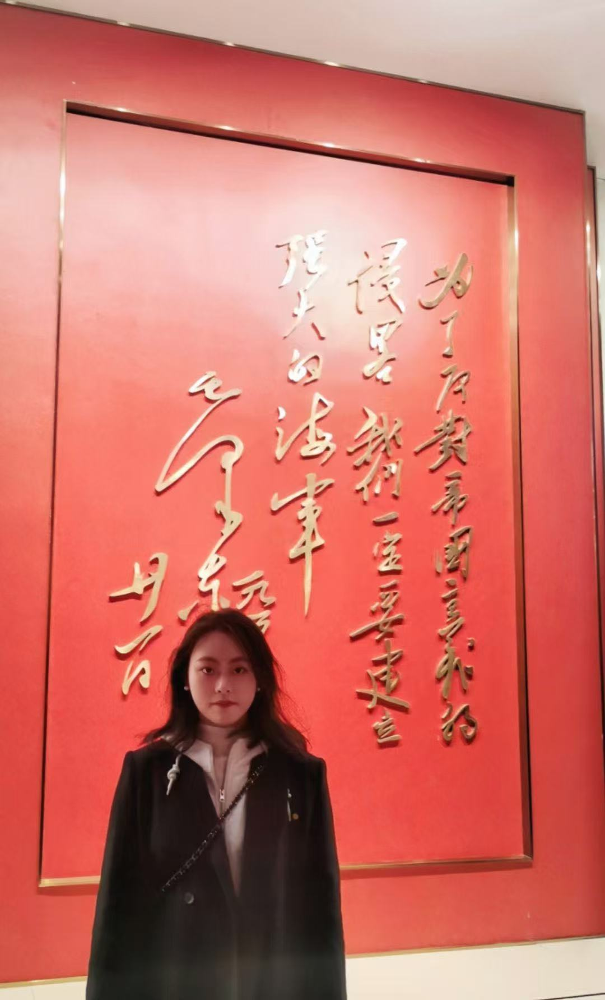

张钰娇 Yujiao Zhang
技术项目经理 | [cite_start]香港理工大学硕士 [cite: 105, 149]
[cite_start]📞 18750781696 [cite: 98]
[cite_start]📧 1053563439@qq.com [cite: 102]
[cite_start]🌐 雅思口语 6.5 [cite: 145]
[cite_start]
IATF16949 质量管理体系数字化建设 [cite: 153]
[cite_start]主导体系从0到1搭建，识别并改进3+项流程漏洞，编写13项标准SOP [cite: 123][cite_start]。将研发至生产质量管控周期缩短约10% [cite: 124, 180]。

[cite_start]
[cite_start]5N级高纯石英砂研发 [cite: 128]
[cite_start]对比日本越信与三菱方案，选定溶胶-凝胶路径，实现国产替代 [cite: 127]。
进行中项目... [cite: 125]
[cite_start]
MCU高频频率片调研 [cite: 133]
[cite_start]完成可行性报告，获管理层认可并成功立项 [cite: 136]。
[cite_start]
车载制冰机专利 [cite: 129]
[cite_start]攻克制冷片衰减难题，主导撰写1篇发明专利 [cite: 131, 132]。
[cite_start]
教育背景 [cite: 150]
-
[cite_start]香港理工大学 (QS 54) [cite: 149][cite_start]环境管理 · 硕士 [cite: 149]
-
[cite_start]福建师范大学 [cite: 149][cite_start]资源循环 · 学士 [cite: 149]